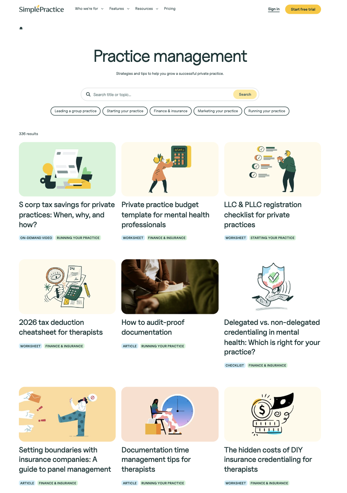
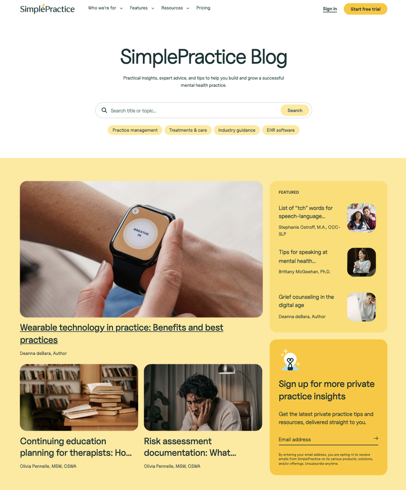

A big audience, a small team, and no machine
When I joined SimplePractice in 2022, the content operation was producing a fraction of what the market demanded. And the audience was the hardest kind to win.
At the time, the platform served 45,000 mental health professionals: clinicians, psychiatrists, and therapists who could spot a generic health article from a mile away and click away just as fast. Winning them meant clearing a bar most content teams never have to touch. Clinical accuracy. Real editorial credibility. A voice that respected how much smarter the reader was than the average blog assumed.
And there was nothing to build on. No AI workflow. No contributor framework. No editorial standards. No system connecting a single published word to pipeline. Just a small team, a demanding audience, and a mandate to make content matter commercially. So I built the machine.
What the machine produced
Four years later, the numbers told the story better than any deck could.
What it looks like in the wild
The system produced two flagship content hubs: a practice management resource library and the SimplePractice Blog, each engineered to rank, convert, and earn the trust of a clinical audience.


Hover to scroll through each page.
How it actually worked
At this scale, for this audience, you can't manage content piece by piece. You build a machine that runs itself.
Clear inputs. A defined process. Quality gates that catch problems before they ship. Feedback loops that make next month's content smarter than last month's. Here's the pipeline I designed, end to end.
Keyword research Intent mapping Cross-functional alignment
Gemini Gems Custom AI assistants Templatized briefs
Tiered contributors Clinical experts Onboarding system
Editorial rubrics Clinical review Voice compliance
Blog Email Social Sales enablement
SEO analytics Lead attribution Conversion by type
The goal was never to produce more content. It was to build a system where quality and volume stopped competing.
The operating principle
AI didn't replace the work. It augmented the workflows.
By 2025, AI touched 75% of our content. But it was always a tool inside a human-built system, never a substitute for editorial judgment.
The real breakthrough was the custom Gemini Gems: AI assistants fine-tuned on SimplePractice's voice, clinical vocabulary, and audience expectations. These weren't generic prompts anyone could copy. They were trained editorial collaborators that understood the difference between how a therapist talks to a client and how a platform talks to a therapist. That distinction is one most AI content misses completely.
The payoff: a two-person in-house team that shipped like a team three times its size, without ever giving up the clinical credibility that made the content worth reading in the first place.
Five things I learned from building an AI-augmented content engine
See the rest of the work
This is one system among many. My full portfolio spans data journalism, clinical content, consumer health, and video production.
View the portfolio